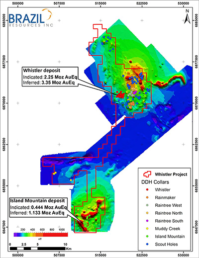

|
URL: http://goldmining.com/news/index.php?content_id=155&page_number=1
Highlights:
- The district-scale Whistler Project is a 170-sq-km land package that hosts the Whistler and Island Mountain deposits and several porphyry targets with excellent potential for resource expansion on existing deposits as well as new discoveries;
- New resource estimate on the Island Mountain deposit provides an indicated resource of 0.444 Moz gold equivalent (25.75 Mt grading 0.53 g/t gold, 1.16 g/t silver, 0.06 % copper or 0.54 g/t gold equivalent) and an inferred resource of 1.133 Moz gold equivalent (69.23 Mt grading 0.51 g/t gold, 1.07 g/t silver, 0.06 % copper or 0.51 g/t gold equivalent), both at a 0.3 g/t gold equivalent cut-off;
- The Island Mountain Resource estimate is in addition to the previously reported resource estimate for the Whistler deposit. The combined resource for the Whistler and Island Mountain deposits is 2.694 Moz gold equivalent (104.95 Mt grading 0.51 g/t gold, 1.77 g/t silver, 0.14 % copper or 0.80 g/t gold equivalent) in the indicated category and 4.483 Moz gold equivalent (215.03 Mt grading 0.44 g/t gold, 1.53 g/t silver, 0.12 % copper or 0.66 g/t gold equivalent) in the inferred category, both at a 0.3 g/t gold equivalent cut-off;
- Approximately 70,000 metres of historic drilling has been completed on the Whistler Project with 12,668 metres (34 holes) completed at the Island Mountain deposit; and
- The deposits are open in several directions and future drill programs will focus on delineating higher grade, near-surface zones and adding additional resources to these existing estimates.
FOR IMMEDIATE RELEASE
Vancouver, British Columbia – April 18, 2016 – Brazil Resources Inc. (the "Company" or "Brazil Resources") (TSX-V: BRI; OTCQX: BRIZF) is pleased to announce the results of a National Instrument 43-101 ("NI 43-101") mineral resource estimate for the Island Mountain deposit, one of several porphyry centers identified on the Whistler Project, Alaska. The 100%-owned district-scale Whistler Project (170 sq km) is located 150 kilometres northwest of Anchorage, Alaska.
Garnet Dawson, CEO, stated: "We are pleased to report this maiden NI 43-101 resource estimate for the Island Mountain deposit, which builds on the multi-million ounce resource we announced on the Whistler deposit last year. In addition to the Island Mountain and Whistler deposits, there are several other porphyry centers (Raintree West, Raintree North, Raintree South, Rainmaker and Cirque) with mineralized intersections similar to these deposits. Future drill programs will focus on delineating higher grade, near-surface zones at the Whistler and Island Mountain deposits, expanding their existing resource, and developing a better understanding of the size potential of nearby targets. In conjunction with advancing our existing project portfolio, the Company continues to evaluate resource-stage projects in the Americas for potential acquisition."
Island Mountain Resource Estimate
Brazil Resources engaged Giroux Consulting Ltd. to prepare an independent NI 43-101 technical report for the Whistler Project, including the first-time resource estimate on the Island Mountain deposit. The resource estimates for the indicated and inferred resource at various cut-off grades are shown in Tables 1 and 2, respectively. The technical report documenting the procedures and results of this estimate will be filed on SEDAR within 45 days of this news release.
Table 1: Island Mountain NI 43-101 indicated resource estimate at various cut-off grades.
| Cut-off |
Tonnes & Grade |
Contained Metal |
AuEq1
(g/t) |
Tonnes
(Mt) |
Au
(g/t) |
Ag
(g/t) |
Cu
(%) |
Au Eq.1
(g/t) |
Au
(Moz) |
Ag
(Moz) |
Cu
(Mlb) |
Au Eq.
(Moz) |
| 0.20 |
51,420,000 |
0.38 |
0.97 |
0.05 |
0.39 |
0.627 |
1.604 |
56.69 |
0.643 |
| 0.25 |
35,540,000 |
0.46 |
1.06 |
0.05 |
0.46 |
0.520 |
1.211 |
39.18 |
0.529 |
| 0.30 |
25,750,000 |
0.53 |
1.16 |
0.06 |
0.54 |
0.438 |
0.960 |
34.07 |
0.444 |
| 0.35 |
19,170,000 |
0.60 |
1.29 |
0.07 |
0.61 |
0.370 |
0.795 |
29.59 |
0.375 |
| 0.40 |
14,990,000 |
0.67 |
1.42 |
0.08 |
0.68 |
0.321 |
0.684 |
26.44 |
0.325 |
| 0.45 |
12,120,000 |
0.73 |
1.55 |
0.08 |
0.73 |
0.283 |
0.604 |
21.38 |
0.286 |
| 0.50 |
10,110,000 |
0.78 |
1.66 |
0.09 |
0.79 |
0.252 |
0.540 |
20.06 |
0.255 |
| 0.55 |
8,510,000 |
0.83 |
1.76 |
0.09 |
0.84 |
0.226 |
0.482 |
16.89 |
0.229 |
| 0.60 |
7,200,000 |
0.88 |
1.81 |
0.10 |
0.88 |
0.203 |
0.419 |
15.88 |
0.204 |
| 0.65 |
6,090,000 |
0.93 |
1.83 |
0.10 |
0.93 |
0.181 |
0.358 |
13.43 |
0.182 |
| 0.70 |
5,110,000 |
0.98 |
1.87 |
0.10 |
0.98 |
0.161 |
0.307 |
11.27 |
0.161 |
| 0.75 |
4,240,000 |
1.03 |
1.89 |
0.10 |
1.03 |
0.141 |
0.258 |
9.35 |
0.141 |
| 0.80 |
3,490,000 |
1.09 |
1.90 |
0.11 |
1.09 |
0.123 |
0.213 |
8.46 |
0.122 |
Table 2: Island Mountain NI 43-101 inferred resource estimate at various cut-off grades.
| Cut-off |
Tonnes & Grade |
Contained Metal |
AuEq1
(g/t) |
Tonnes
(Mt) |
Au
(g/t) |
Ag
(g/t) |
Cu
(%) |
Au Eq.1
(g/t) |
Au
(Moz) |
Ag
(Moz) |
Cu
(Mlb) |
Au Eq.
(Moz) |
| 0.20 |
119,770,000 |
0.39 |
0.94 |
0.05 |
0.40 |
1.509 |
3.620 |
132.05 |
1.533 |
| 0.25 |
91,340,000 |
0.45 |
0.99 |
0.05 |
0.45 |
1.313 |
2.907 |
100.70 |
1.327 |
| 0.30 |
69,230,000 |
0.51 |
1.07 |
0.06 |
0.51 |
1.124 |
2.382 |
91.59 |
1.133 |
| 0.35 |
51,810,000 |
0.57 |
1.18 |
0.06 |
0.57 |
0.944 |
1.966 |
68.54 |
0.953 |
| 0.40 |
39,840,000 |
0.63 |
1.30 |
0.07 |
0.63 |
0.803 |
1.665 |
61.49 |
0.810 |
| 0.45 |
31,980,000 |
0.68 |
1.40 |
0.07 |
0.68 |
0.697 |
1.439 |
49.36 |
0.702 |
| 0.50 |
26,880,000 |
0.72 |
1.46 |
0.08 |
0.72 |
0.621 |
1.262 |
47.42 |
0.624 |
| 0.55 |
22,370,000 |
0.76 |
1.53 |
0.08 |
0.76 |
0.547 |
1.100 |
39.46 |
0.548 |
| 0.60 |
18,780,000 |
0.80 |
1.58 |
0.08 |
0.80 |
0.481 |
0.954 |
33.13 |
0.482 |
| 0.65 |
15,450,000 |
0.84 |
1.64 |
0.09 |
0.84 |
0.415 |
0.815 |
30.66 |
0.415 |
| 0.70 |
11,930,000 |
0.88 |
1.73 |
0.09 |
0.88 |
0.339 |
0.664 |
23.68 |
0.339 |
| 0.75 |
8,860,000 |
0.94 |
1.85 |
0.10 |
0.94 |
0.267 |
0.527 |
19.54 |
0.267 |
| 0.80 |
6,520,000 |
1.00 |
1.95 |
0.10 |
1.00 |
0.209 |
0.409 |
14.38 |
0.209 |
Table 1 and 2 Notes:
- 1Gold-equivalent grade assumes metal prices of US$1,250/oz gold, US$16.50/oz silver and US$2.10/lb copper and recoveries of 90% for gold (cyanide), 80% for copper (flotation) and 25% silver (recovery in copper concentrate).
- A 0.30 g/t gold equivalent has been highlighted as a possible open pit cut-off based on studies completed at the nearby Whistler deposit.
- Totals may not represent the sum of the parts due to rounding.
- The Mineral Resources have been prepared by Giroux Consulting Ltd. in conformity with "CIM Definition Standards for Mineral Resources and Mineral Reserves 2014".
Table 3: Whistler and Island Mountain NI 43-101 resource estimate, Whistler Project.
| Deposit |
Classification |
Cut-off |
Tonnes & Grade |
Contained Metal |
| |
|
|
|
Tonnes & Grade |
Contained Metal |
| |
|
AuEq.1,2
(g/t) |
Tonnes
(Mt) |
Au
(g/t) |
Ag
(g/t) |
Cu
(%) |
AuEq.1,2
(g/t) |
Au
(Moz) |
Ag
(Moz) |
Cu
(Mlb) |
Au Eq.
(Moz) |
| Whistler4 |
Indicated |
0.3 |
79.20 |
0.51 |
1.97 |
0.17 |
0.88 |
1.280 |
5.030 |
302.00 |
2.250 |
| Island Mtn.5 |
Indicated |
0.3 |
25.75 |
0.53 |
1.16 |
0.06 |
0.54 |
0.438 |
0.960 |
34.07 |
0.444 |
| |
|
|
104.95 |
0.51 |
1.77 |
0.14 |
0.80 |
1.718 |
5.990 |
336.07 |
2.694 |
| |
|
|
|
|
|
|
|
|
|
|
|
| Whistler4 |
Inferred |
0.3 |
145.80 |
0.40 |
1.75 |
0.15 |
0.73 |
1.850 |
8.210 |
467.00 |
3.350 |
| Island Mtn.5 |
Inferred |
0.3 |
69.23 |
0.51 |
1.07 |
0.06 |
0.51 |
1.124 |
2.382 |
91.59 |
1.133 |
| |
|
|
215.03 |
0.44 |
1.53 |
0.12 |
0.66 |
2.974 |
10.592 |
558.59 |
4.483 |
Table 3 Notes:
- 1Gold-equivalent grade for the Whistler resource assumes metal prices of US$990/oz gold, US$15.40/oz silver and US$2.91/lb copper.
- 2Gold-equivalent grade for the Island Mountain resource assumes metal prices of US$1,250/oz gold, US$16.50/oz silver and US$2.10/lb copper and recoveries of 90% for gold (cyanide), 80% for copper (flotation) and 25% silver (recovery in copper concentrate).
- Totals may not represent the sum of the parts due to rounding.
- The Mineral Resources for the Whistler deposit have been prepared by Moose Mountain Technical Services in conformity with "CIM Definition Standards for Mineral Resources and Mineral Reserves 2014". The resource estimate is contained in the amended and restated technical report titled "NI 43-101 Resource Estimate for the Whistler Project" authored by Robert J. Morris, M.Sc., P.Geo., Susan C. Bird, P.Eng., and Alan Riles, B.Met, M.AIG, who are each qualified persons within the meaning of NI 43-101 and independent of the Company with an effective date of August 15, 2015 (amended and restated as of November 12, 2015).
- The Mineral Resources for the Island Mountain deposit have been prepared by Giroux Consulting Ltd. in conformity with "CIM Definition Standards for Mineral Resources and Mineral Reserves 2014".
The Island Mountain deposit is one of several porphyry centers identified on the Whistler Project (Fig. 1). The deposit outcrops on the southwest slope of Island Mountain and has been drilled over a strike length of 300 metres and to a depth of 450 metres; the deposit is up to 400 metres in width. The deposit is open to depth and to the north where surface mapping, geochemistry and geophysics have identified coincident hydrothermal breccia, multi-element geochemical and magnetic anomalies for an additional 400 metres to the north. Gold-copper mineralization is hosted by intrusive and hydrothermal breccia associated with strong sodic-calcic alteration, and gold-only mineralization is hosted by diorite porphyry with vein and disseminated pyrrhotite.
The Island Mountain deposit was first modelled on a series of cross-sections, followed by longitudinal sections and plans for both lithology and alteration/mineralization and, from this, a geologic solids model was produced to constrain the resource estimate. A total of 8 mineralized geologic domains were modelled. Thirty-four diamond drill holes totaling 12,668 metres were used to define the model. Erratic high grade outliers for gold, silver and copper were capped within each of the geologic domains. Composites 5 metres in length were formed within each of the domains that honoured the domain boundaries. Variography was used to model the grade continuity and to determine the search ellipse orientations and dimensions for interpolation. Ordinary kriging was used to estimate gold, silver and copper into blocks measuring 10 x 10 x 10 metres in dimension. A total of 218 samples had specific gravity measurements, which were subdivided into domains to convert volumes to tonnes. The blocks were classified as Indicated or Inferred based on grade continuity as measured by semivariograms. A 0.30 g/t gold equivalent cut-off grade was chosen as a possible open pit cut-off based on studies completed at the nearby Whistler deposit. Validation of the model was completed by comparison of the block model and drill hole grades by visual inspections in section and plan across the deposit.
Figure 1: Whistler Project showing location of Whistler and Island Mountain deposits.

Quality Control – Quality Assurance Program
The above resource estimate was based on drill programs completed by previous operators that incorporated control samples including blanks, duplicates and standards as part of their Quality Control – Quality Assurance Program. The control samples from these programs have been reviewed and verified by the Qualified Persons and the assay results were deemed suitable for resource estimation.
Qualified Person Statement
The resource estimate disclosed herein was prepared for Brazil Resources by Gary Giroux, MASc., P.Eng. of Giroux Consultants Ltd, who is a Qualified Persons as defined in NI 43-101, is independent of the Company and has reviewed and approved the disclosure regarding the Island Mountain resource estimate.
A technical report respecting the above resource estimate will be filed under the Company’s profile on SEDAR in due course. There is no new material scientific or technical information respecting the Whistler Project since the effective date of the resource estimate.
Paulo Pereira, Brazil Resources' President, has reviewed and approved the technical information contained in this news release. Mr. Pereira holds a bachelors degree in Geology from Universidade do Amazonas in Brazil, is a Qualified Person as defined in NI 43-101 and is a member of the Association of Professional Geoscientists of Ontario.
About Brazil Resources Inc.
Brazil Resources Inc. is a public mineral exploration company with a focus on the acquisition and development of projects in emerging producing gold districts in Brazil and other regions of the Americas. Brazil Resources is advancing its Cachoeira and São Jorge Gold Projects located in the State of Pará, northeastern Brazil, its Whistler Gold-Copper Project located in the state of Alaska, United States of America, and its Rea Uranium Project in the western Athabasca Basin in northeast Alberta, Canada.
For additional information, please contact:
Brazil Resources Inc.
Amir Adnani, Chairman
Garnet Dawson, CEO
Telephone: (855) 630-1001
Cautionary Note
Investors are cautioned not to assume that any part or all of the mineral deposits in the "indicated" and "Inferred" categories will ever be converted into mineral reserves with demonstrated economic viability or that inferred mineral resources will be converted to the measured and/or indicated categories through further drilling. In addition, the estimation of inferred resources involves far greater uncertainty as to their existence and economic viability than the estimation of other categories of resources. Under Canadian rules, estimates of Inferred Mineral Resources may not form the basis of feasibility or other economic studies.
Forward Looking Statements
This document contains certain forward-looking statements that reflect the current views and/or expectations of Brazil Resources with respect to its business and future events, including statements regarding the estimation of mineral reserves and the Company’s expectations respecting the Whistler Project. Forward-looking statements are based on the then-current expectations, beliefs, assumptions, estimates and forecasts about the business and the markets in which Brazil Resources operates. Investors are cautioned that all forward-looking statements involve risks and uncertainties, including: the inherent risks involved in the exploration and development of mineral properties, the uncertainties involved in interpreting drill results and other exploration data, the potential for delays in exploration or development activities, the geology, grade and continuity of mineral deposits, the possibility that future exploration, development or mining results will not be consistent with Brazil Resources' expectations, accidents, equipment breakdowns, title and permitting matters, labour disputes or other unanticipated difficulties with or interruptions in operations, fluctuating metal prices, unanticipated costs and expenses, uncertainties relating to the availability and costs of financing needed in the future, commodity price fluctuations, regulatory restrictions, including environmental regulatory restrictions, or any failure to integrate acquired companies and projects into the Company's existing business as planned. These risks, as well as others, including those set forth in Brazil Resources' filings with Canadian securities regulators, could cause actual results and events to vary significantly. Accordingly, readers should not place undue reliance on forward-looking statements and information. There can be no assurance that forward-looking information, or the material factors or assumptions used to develop such forward looking information, will prove to be accurate. Brazil Resources does not undertake any obligations to release publicly any revisions for updating any voluntary forward-looking statements, except as required by applicable securities law.
Neither the TSX Venture Exchange nor its Regulation Services Provider (as that term is defined in the policies of the TSX Venture Exchange) accepts responsibility for the adequacy or accuracy of this news release.
|